Features
Everything in Studio
Mefi Studio is a free, open-source Windows app where you build your ideas with coding agents, watch them work, and share what you make with other people.
313 features in 14 areas. Each one carries a badge that says where it stands.
- In 0.4.4240
- In the download today.
- Coming in 0.4.560
- Built on main. It ships with 0.4.5, the next release.
- Rolling out9
- Built. It goes live for everyone once the community rooms hub and Discord link are online.
- Experimental4
- Built, but off by default, opt-in or not officially supported.
0.4.5 is not released yet. These are the features selected for it; bigger rebuilds stay later. See what will and won’t ship in 0.4.5, or the full roadmap.
Vibe and Build
Studio opens in Vibe: one box where you talk an idea over or build it. Build is the full studio, and one menu, one search box and single keys reach every page.

Vibe mode
In 0.4.4One box for an idea, a fix or a question. Cards appear only when they have something to say: Needs you, Building now, Plan in flight, Freshly done and Fresh ideas.
Vibe dock and panels
In 0.4.4The dock always has Tasks, Team and More, and Watch, Plans and Ideas step in while they matter. Each opens a compact panel beside the box, with Full view one click away.
Vibe stays Vibe
In 0.4.4Pages you open from Vibe open inside its own narrow rail, with the way back at the top. The Build switch is the only way out.
Build mode
In 0.4.4The full studio: the Home workspace plus the Work and Agents pages. Studio remembers which mode you use.
Your workspace (Home)
In 0.4.4Build's home screen holds the conversation, the current task with its worker, checks and next step, and Your work: All, Queue, Ideas, Review and Done.
Talk it over
In 0.4.4Chat with Mefi about an idea without creating any work: press Enter in Vibe's box. From 0.4.5, describing something buildable gets a reply that offers the board.
Build it
In 0.4.4Press Build it (Ctrl+Enter) to turn your words into work on the board. If the agents are off or paused, it says so and points at the control that starts them.
Mefi sizes it
In 0.4.4A small change goes straight onto the board. A bigger one may be split into two to six steps that each leave the project working, with your own card last as the final check.
Plan in flight and Make it one task
In 0.4.4A split request shows its progress on a Plan in flight card. Make it one task drops the steps that have not started.
New app
In 0.4.4Press + beside Vibe's project picker, name an app and say what it should be. Studio makes a fresh folder under Mefi Apps, starts git and sends your description to Build it.
Chat and Create task
In 0.4.4Home's composer has Chat for talking and Create task for work with acceptance checks. Use a task outline adds room for the goal, the checks and the boundaries.
Add files
In 0.4.4Drop text or code files into Home, Vibe or Plans, or use Add files, to put their contents in your draft as editable text. A drop never sends or approves anything.
Drafts kept per project
In 0.4.4Chat, task and Vibe drafts are saved separately for each project and survive moving around.
Chat that acts on your tasks
In 0.4.4Ask plainly to start, retry or stop a task, mark it done or leave a note for the next worker. Anything you did not plainly ask for becomes a card for you to confirm.
Task updates in the conversation
In 0.4.4Each task gets one line in the thread that updates in place: started, verifying, verified, retrying or parked.
Automatic task context
In 0.4.4New tasks gather matching code, sessions and chat references by themselves, and a small scout model can pick a checked starting file for the builder.
App preview
In 0.4.4Studio can start your project's own local preview, then offers Open app and Stop preview.
The menu
In 0.4.4One menu down the left edge: New task and Search at the top, then Home, Work and Agents, with Settings and Help below and your recent tasks for this project.
Search Studio (Ctrl K)
In 0.4.4Find any page, tool, setting, action, task, node or model in everyday words. Results open the real control.
Single-key shortcuts
In 0.4.4H goes Home, D opens Command view, T Tasks, P Plans, I Ideas, B Brain maps, J Agent brain and E Sessions. Press ? for the full sheet, and Esc closes the current layer.
Back and Forward per section
In 0.4.4Each section keeps its own history. Selections, drafts and scroll positions survive ordinary moves.
Projects panel (M+)
In 0.4.4M+ at the top of the menu lists your project folders, with + to add one.
Classic navigation
In 0.4.4Type 'Switch navigation: rail or classic' in Search to bring back the older tabs-and-dock layout.
Reload keeps your place
In 0.4.4Ctrl R and update reloads keep your view, selection and typed text.
Scrollbar-free lists
In 0.4.4Lists fade at the edges and show arrows where there is more to see. Wheel, touch and keyboard scrolling still work.
Watch Mefi think
Coming in 0.4.5Suggest a next step and Build it show a live strip: the stage reached, the files read or steps planned, which model is thinking, and a clock against how long this usually takes on your PC.
Watch your team on a split request
Coming in 0.4.5The plan card draws its steps as a track that ends in the final check, naming the step being built and what its agent is doing now.
MEFI: Modify, Experiment, Fix, Improve
Coming in 0.4.5Four starting points for changing the open project, Studio itself included. Pick an approach, describe the change, then talk it over or build it.
Suggest a next step
Coming in 0.4.5Mefi reads your project and suggests next steps with reasons and file references. Add to draft, Save idea or Clear; nothing starts until you build.
Plans, ideas and tasks
When the route is unclear, Plans interviews you until the idea is a specification you approve. Every piece of work becomes a task you can follow from Ready to Done, and Studio notices work you did outside it.
Plans (P): the interview
In 0.4.4Describe the outcome, and Mefi asks the question that would most change what gets built. It reads your answers back, flags contradictions and labels who said each line.
What we understand
In 0.4.4Before any specification is drafted, Mefi reads the plan back to you and waits for your confirmation.
From specification to tasks
In 0.4.4Approve a specification of small tasks with acceptance checks and prerequisites, then create its tasks when you choose. Planning never launches workers, and manual planning works without an AI key.
Write with Mefi
In 0.4.4A live writing partner explores your project files as you type and offers wording you can edit, with Refine and Undo. Write manually turns it off.
Continue with Mefi
In 0.4.4Your answer is saved before Mefi is asked, so a failed reply loses nothing and the interview picks up where it stopped.
Archive and Restore plan
In 0.4.4Set a plan aside, read-only, and bring it back exactly as it was.
Plans remember your place
In 0.4.4Plans keeps the selected plan and stage for each project.
Feature ideas (I)
In 0.4.4An idea inbox and a feature graph. Ideas become tasks only when you promote them, and Scan chats for ideas collects new ones from recent conversations.
Fresh ideas in Vibe
In 0.4.4New ideas appear on a Fresh ideas card and in the Ideas panel, where you can build each one, keep it for later or dismiss it.
Work through backlog
In 0.4.4Works through the project's existing tasks and ideas first, admitting ideas in small batches while keeping some ready work in hand.
Task board (T)
In 0.4.4Plan cards with progress and a current step. Each task holds its brief, prerequisites, hand-off context and history.
Plain task states
In 0.4.4Ready, Working, Waiting on prerequisites, Retry scheduled, Needs attention, Awaiting verification and Done, each with the next step to take.
Prerequisites
In 0.4.4Choose which tasks must finish first. Missing prerequisites and dependency loops are flagged so you can fix them.
Live worker status
In 0.4.4Running cards show whether the worker is preparing, building, finishing or stopping, its current step or tool, and when it last updated.
Start this task
In 0.4.4Start or resume one task by itself, even while the queue is paused. Approval, prerequisites and machine limits still apply.
Work on it
In 0.4.4Make any task, session or node the next piece of work. It is pinned to the front of the board and started right away.
Task run history
In 0.4.4Each attempt is listed: who ran it, how it ended and what it changed.
Brief history
In 0.4.4Load earlier versions of a task's brief and restore one if a change went the wrong way.
Notes for the next attempt
In 0.4.4Leave a note on a task, even a queued one, and the next worker reads it first.
Drop and Reopen
In 0.4.4Close a task you won't do without marking it done. Reopen brings it back.
Waiting on follow-ups
In 0.4.4A task that handed work on finishes by itself once its follow-ups do, so only a stuck follow-up asks for you.
Request a change
In 0.4.4Finished work offers Request a change, View checks and Open app. Request a change opens a linked task draft and keeps the original's evidence.
Copy handoff and done summary
In 0.4.4Copy a task's hand-off to pass to another worker, or its done summary to share.
Vibe Tasks: List and Lanes
In 0.4.4Switch between a list and lanes (Needs you, Ready, Building, Checking, Later, Done) with live counts, pause and resume, and a worker limit.
Task inspector
In 0.4.4Set a task's priority, estimated minutes, Done when checks and a Defer until date. From 0.4.5, deferred work reads 'Scheduled for later' with its reason.
Swarm or Cluster
In 0.4.4Swarm gives each ready task its own builder. Cluster puts planning, review and scoped delegation around one shared task.
Parallel builds
In 0.4.4Machine managed starts builds while the app stays responsive and backs off when the PC is busy, or you set a limit of one to three workers.
Projects and Save & switch
In 0.4.4Each folder keeps its own tasks, conversations, plans and references. Switching while a worker runs saves its progress first, and Remove project never touches your files.
While Studio was away
In 0.4.4Studio keeps a last look at each folder. When you come back it reports the commits, uncommitted edits and Claude Code, Codex or OpenCode sessions run there meanwhile.
Queued work is checked first
In 0.4.4If the code changed, each queued card is checked against that work. One that looks already done waits for you with Mark it done, Drop it or Build it anyway, and its Evidence tab shows why.
Plan timeline in Vibe
Coming in 0.4.5Vibe's Plans panel shows a plan as a timeline: who is on each step, and which step each waiting one waits for.
Compact Ideas cards
Coming in 0.4.5The Ideas list gets clear titles, short excerpts and status tags in compact cards. Short cards slide into free space, the layout adapts to the window, and selecting a card opens its existing detail and actions.
Ask what changed, even without AI
Coming in 0.4.5Ask 'what did I do while Studio was closed?' and the chat answers from the report, even with no model connected.
Your agent team
Choose who answers and who builds. Coding tools do the building with your own logins, and a team of helper agents plans, reviews and writes the briefs.
Agents workspace
In 0.4.4One place for your team: Overview, Setup, Live, Workflows, Models and Usage, with start and pause controls and a list of what needs you.
Coding CLIs as builders
In 0.4.4OpenCode, Claude Code, Codex, Grok or Antigravity edit your files using your own logins. Split-off subtasks can follow the same tool or use another.
Agent seats
In 0.4.4Named seats, each on its own model: the lead plans and splits work, the desk helps stuck workers, your companion talks with you, the scout finds a starting file and the overseer reviews the team.
Team & models
In 0.4.4Each agent gets a model menu, effort and fast settings. Refresh model list fetches a provider's current models, or you can type a model ID.
Team presets and project teams
In 0.4.4Save a team as a preset, give a project its own copy, and keep Studio defaults that new projects inherit. Edits wait for Apply changes or Discard draft.
Helper roles you can see
In 0.4.4An always-on loop of small roles keeps the board tidy: watcher, auditor, keeper, briefer, foreman, overseer and more. Read their notes to each other under 'Said to each other'.
Vibe Team panel
In 0.4.4Shows who is building and which model each seat runs, in plain words, with Start, Resume or Pause. From 0.4.5 it also lists what Mefi is thinking about.
Skills per agent
In 0.4.4The + on an agent attaches up to eight installed local skills (SKILL.md folders) to that agent only.
Web search, project reads and MCP tools
In 0.4.4For each agent, turn on web search, read-only project file reads and up to sixteen tools from local MCP servers you trust. Project reads are off by default and skip credential files.
Your own MCP tools
In 0.4.4Register trusted local MCP servers in
~/.mefi-studio/mcp.json, then choose which of their tools each agent may use. Only local (stdio) servers are supported.Habits
Coming in 0.4.5Short behaviour rules for each agent, such as explain changes, test and take small steps. Each can be off, brief or full, and Studio shows the tokens they add to every prompt.
Every builder checked the same way
Coming in 0.4.5Claude Code, Codex, Grok and Antigravity builds are checked by Studio's own verification instead of being sent back to OpenCode, and Codex builders get Studio's tools.
Ask the desk mid-run
ExperimentalTurn on Let workers ask the desk, and OpenCode and Claude Code workers can ask the desk agent a question and wait for its answer. Off by default.
Nested delegation and head drafts
ExperimentalTwo switches, off by default: one lets a delegated slice split once more (never past three levels), the other lets the lead draft a pipeline for a complex task no recipe fits.
Per-run git worktrees
ExperimentalOpt in with
MEFI_STUDIO_WORKTREE_RUNS=1and each build works in its own git checkout and branch, merged back one run at a time.
You stay in charge
You decide how much Mefi handles. Everything that needs you is in one list, every automatic choice has a reason and Undo, and finished work waits for proof before it counts as done.

Needs you
In 0.4.4One list of everything waiting on you: questions, builds waiting for your OK and stuck tasks. The same count shows on the companion, the menu and the tray.
Ask cards with a recommended option
In 0.4.4Agent questions arrive as cards with the task, the failing check and the last lines the agent saw. A toast with an Answer button reaches you from any view.
Answer in Vibe
In 0.4.4Answer opens a drawer with the question, the task it blocks and its options, recommended first, or takes your own words, then moves on to the next item.
Permission modes
In 0.4.4Always ask, Accept per task, Auto (the default) or Elevated only decide how much Mefi handles for you. The same control sits in the composer, Vibe, the companion, Agents and Search.
Elevated requests
In 0.4.4Six kinds of decision stay yours unless you switch them off, among them irreversible changes, granting reach and a pricier model.
Decided for you, with Why and Undo
In 0.4.4Every automatic choice is listed with its reason. Undo reopens the question, waits for any running worker and keeps your later edits.
Mefi decided
In 0.4.4Answers Mefi gives for you are labelled 'Mefi decided' with a reason. They keep your stops and retry limits, and are never learned as your preference.
Learns from your answers
In 0.4.4Recent choices count more and corrections count double. See what it learned, forget one pattern or all of them, or switch learning off.
Things only you can do
In 0.4.4Jobs only a person can do reach you once, with I'll take care of it or Answer it in one line, and real-world to-dos wait on a short For you list.
Approve build
In 0.4.4When a task waits for approval, read its brief, files and prerequisites, then choose Approve build. Editing the scope asks again.
Repeat questions fold
In 0.4.4If another card asks the same question within a day, it waits on the open card or takes your earlier answer.
Loop guard
In 0.4.4A card that keeps failing for its own reasons is held with an explanation of why and how to fix it. Try again releases it.
Let the desk handle asks
In 0.4.4Off by default. When on, your companion answers open questions with the desk agent's model and says what it chose. Permission, risk and owner-only questions always wait for you.
What holds the agents
In 0.4.4A banner names whatever is holding every agent back and carries the fix: Start agents, Resume or Connect an AI.
Pause, New work and Stop all
In 0.4.4Pause holds new work while running jobs finish, and New work is the master switch. Stop all halts every agent and saves its progress.
Awaiting verification
In 0.4.4An agent saying it is done is not enough. Finished work waits with its evidence until the checks pass or you confirm it.
Your project's own checks
In 0.4.4Checks run in the task's own folder with its own check or test script, never Studio's.
Review
In 0.4.4Review lists only work that needs you: finished runs waiting for checks and attempts that need attention.
Mark done
In 0.4.4Mark a result complete after reviewing it yourself. The board keeps 'Completion verified' apart from 'Completion confirmed by you'.
Honest retries
In 0.4.4A retry is judged by its own check, never by an earlier pass, and its note quotes the failing command for the next worker.
Rate recent work
In 0.4.4Give your own score to a result you reviewed. It stays separate from model judging.
Agents say why they are not working
Coming in 0.4.5Home, Vibe, Command, the Agents switches, each task and the chat read one shared answer about what is holding work back, so they never disagree.
A tidy Needs you
Coming in 0.4.5Answered questions leave the list at once, and questions past their age or whose card left the board close when the project loads.
Ask twice before it can't be undone
Coming in 0.4.5Stop all, Restart, dropping a task, deleting a preset and similar actions share one two-step button: the first press asks, the second acts.
Watch your agents work
Command view draws your project as a live node tree where agents fly to the work they're doing. Read-only views show every session, change and log.

Command view (D)
In 0.4.4Sessions, tasks and agents as a live node tree in 2D or 3D. Agents fly to the task they are working on and bring finished work home.
Speech bubbles and agent notes
In 0.4.4Bubbles beside each agent say what it is doing, and notes between agents ride the lines as small packets.
Callouts and focus
In 0.4.4Sessions, tasks and working agents carry numbered cards with done and remaining counts. Click one and the camera glides in while the rest keeps turning behind a blur.
Agent glyphs and motion
In 0.4.4Each agent wears its role glyph, like an eye for the watcher or a hammer for a builder, spins a ring while working and leaves a coloured trail when it flies.
Absorb
In 0.4.4A finished node folds into the node it belongs to, and its brief stays readable under Absorbed work.
Lines that mean something
In 0.4.4A task's link marches while its worker runs, an agent's tether is dashed, and a done to-do's link fades green.
Inspect mode
In 0.4.4Selecting a node gives its details the whole right panel. Esc steps out one level at a time.
Work, Assistant, Runs and Ask
In 0.4.4Work shows the current worker and a ranked queue, Assistant is the chat log with one-tap actions, Runs groups recent builds by task and Ask holds decisions.
Command toolbar
In 0.4.4Four groups: Agents (Swarm or Cluster and queue controls), Camera (Fit, Overview or Follow, Spin), View (2D or 3D, Labels, Zoom) and Sound.
Labels
In 0.4.4Cycle Auto, Updates, All and None with L. Updates shows task progress and code changes without routine chatter.
Drifting 3D Overview
In 0.4.4The 3D Overview turns the tree in place and drifts gently to keep all of it in view.
Zen tour
In 0.4.4Park the mouse at the right edge, or turn on idle Zen, and the camera tours the tree while the panels fade. Move, click or type to come back.
Touch, pinch and keys
In 0.4.4The wheel or a two-finger pinch zooms toward the pointer, and touch and pen work like the mouse. [ and ] step through tasks, C cycles the camera, V switches 2D and 3D, and Space pauses the spin.
Legend and Usage pill
In 0.4.4Corner pop-ups explain the tree's symbols and show your plan usage at a glance.
Overhead (O)
In 0.4.4The node tree seen from above with task boxes, showing which session works on which task.
Session explorer (E)
In 0.4.4Every coding session, with checkpoints you can Reference, Explore, Restore or Expand. Open task jumps to the task a session worked on.
Brief me and run controls
In 0.4.4From the Explorer, ask the assistant for a briefing, pause or resume it, or kill a stuck run.
Activity & evidence (3)
In 0.4.4A read-only feed of changes with diffs, totals per session, screenshots you can pin and the tail of the log.
Trace
In 0.4.4Studio's logs as channels in one viewer under Agents › Live. Search, filter by level and source, follow live, copy lines or open the file.
Analyzer (A)
In 0.4.4Compares plans and notes with the current source, listing file:line evidence and completion claims nobody has verified. It runs locally, with an optional AI read.
Fleet: seats, pods and wires
Coming in 0.4.5Agents › Live › Fleet shows your team in Graph, Table, Recent, Tree and Health views. A seat’s inspector shows its work and earlier runs, with Open task, Open in Command and Stop this run. Lanes, missions and other PCs remain later work.
Pages that say what they mean
Coming in 0.4.5Pages leave out values that were never recorded instead of printing '?' or 'undefined', counts match what is shown, and errors read as plain sentences.
Agent brain, Playbook and maps
See how a task splits into steps and who works each one. Studio keeps the recipes that worked, maps your project's systems, and lets you rewire its own pipeline.
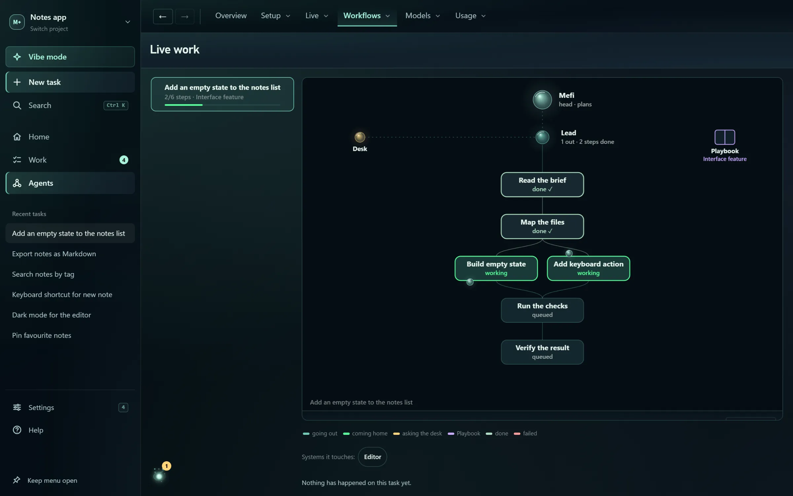
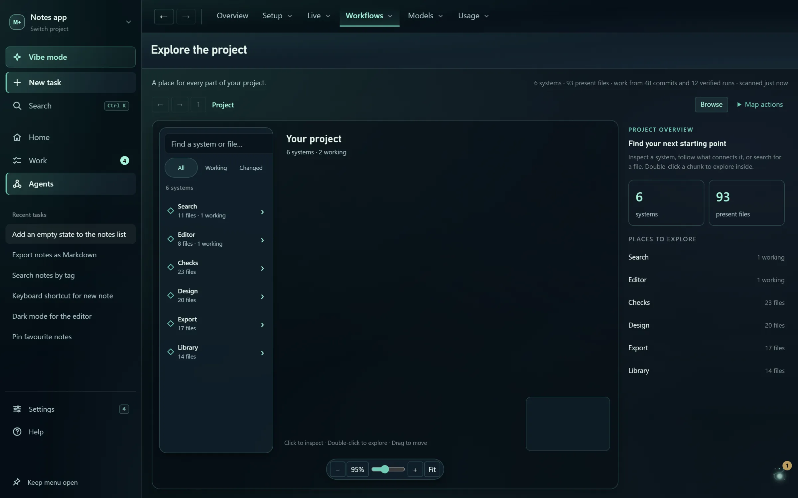
Agent brain (J)
In 0.4.4Draws one task's pipeline top-down: your companion as the head, then the lead, the steps and the sub-agents working them. Reports climb back up the tree.
Replay today
In 0.4.4Play back the day's recorded agent events.
Pipelines
In 0.4.4Every task gets a plan of steps before its worker starts, from the best saved recipe or a template. It grows from the worker's own to-do list and folds finished steps away.
Reports up the tree
In 0.4.4A sub-agent's report reaches its parent, and a finished child starts the parent's integration pass at once.
The desk
In 0.4.4A desk agent answers stuck workers' questions on the lead's model and folds repeated questions together. It sends you only what it cannot answer.
Playbook
In 0.4.4Every verified or failed pipeline is filed as a recipe, and the next task of the same kind starts from the one that succeeds most. Pin, rename, retire or delete recipes.
Seats tab
In 0.4.4See and change the models behind the lead and desk seats, plus the delegation switches.
Project map
In 0.4.4A map of your project's systems, built from recent git history and the files verified runs touched. Workers are told the related systems and the files that change most.
Explore the map
In 0.4.4Click to inspect and double-click to go inside. Back and Forward, breadcrumbs, Browse and a clickable minimap help you move around.
Name the systems
In 0.4.4Ask the lead agent to give the map's systems readable names.
Project map on Home
In 0.4.4Pick a system beside the conversation to see its tasks, ideas and plans, then choose Work on this region.
Brain maps (B)
In 0.4.4The agent pipeline as an editable graph of parts and wires. The map that ships with Studio is the loop Studio really runs.
Make this live
In 0.4.4Before a map goes live, the editor lists exactly which switches it will move and waits for your confirmation.
Decision lane settings
In 0.4.4Decide whether an agent's problem reaches you, what Mefi may settle itself and when unanswered cards expire. Permission and risk questions always stay yours.
A real node editor
In 0.4.4Pan and zoom with a minimap, drag wires, search parts with Space, copy several parts, undo with Ctrl Z, walk problems with F8 and line the map up with Tidy.
Build with AI
In 0.4.4Describe a pipeline in a sentence and get a drafted map, repaired before you see it and saved only after you have looked.
Live activity
In 0.4.4Each part shows what it did in the last 24 hours, and every setting says whether Studio reads it yet.
Nested brains
In 0.4.4An Another brain part hands a branch of the pipeline to another saved map, up to four levels deep.
Edits are never lost
In 0.4.4Closing the editor keeps unsaved edits for next time. Discard unsaved changes throws them away when you mean to.
Connected system cards
Coming in 0.4.5Systems that changed together share a branch with their parts and files. Systems without that evidence wait under Connections still to discover.
Ideas tree
Coming in 0.4.5Groups your ideas and tasks by system and progress, keeps subtasks under their parents and regroups as agents discover files.
Work with Mefi from the map
Coming in 0.4.5The map inspector's Modify, Experiment, Fix and Improve buttons prepare a Vibe draft about the chosen area.
Models, routing and usage
Pick which AI answers each role and which model builds each task, or let Studio choose. See what every plan has left without sending a prompt.
Model routing
In 0.4.4Auto works down a provider list you can reorder. You can also pin z.ai, OpenCode Go or Zen, OpenRouter, a CLI login, LM Studio or any OpenAI-compatible endpoint.
Signed-in coding tools first
In 0.4.4On by default: Claude Code, Codex, Grok and Antigravity logins answer before your listed providers, so subscriptions you already pay for are used first.
Fall back when a provider fails
In 0.4.4An opt-in switch sends a failed or rate-limited call to the next provider instead of waiting.
Failing providers pause
In 0.4.4After three failures in a row a provider is paused for 30 seconds, and the next one answers straight away. Saving a key or changing routing lifts the pause.
Outages don't cost a task its tries
In 0.4.4When a provider hits a usage limit, rate limit or outage, the task waits and retries later without losing an attempt.
Different AI for chat and for planning
In 0.4.4Routine answers and planning & review can each use their own provider and model, with reasoning effort where the model supports it.
Models saved per provider
In 0.4.4Each provider and coding tool keeps its own model choice, so switching never mixes them. OpenRouter lists free models first.
Coding tiers: Auto, Free, Fast, Heavy
In 0.4.4Decide what each build may cost. Free never falls back to paid models, and Settings shows what each tier will run before anything starts.
Picks the model most likely to succeed
In 0.4.4Under Auto, every build is scored as a win or a loss, and the next build goes to the model most likely to succeed, weighing cost, speed and headroom. A model you pin always wins.
What each model is good at
In 0.4.4Model strengths are learned from verified wins and losses for each kind of work, and shown in Agents routing and Vibe's Team.
Try again with a heavier model
In 0.4.4A one-tap retry on the builder's Heavy-tier model. From 0.4.5 it really uses that model and is offered only where one exists.
Jev decision model
In 0.4.4Optional: a small model that sorts new work and helps pick models, reached with its own key. Without it Studio uses fixed defaults.
Plain-language connection errors
In 0.4.4A Claude quota or login problem shows the tool's real message and reset time.
Model catalog (1)
In 0.4.4Compare models by published quality, cost per request, requests per 5 hours, context size and monthly pool. Search with /, or print it to PDF.
Catalog insights
In 0.4.4A value map of cost against quality, a 'Where should I use it?' ranking and a heatmap of which models fit which tasks.
Performance (2)
In 0.4.4Measured speed, errors and reported cost of each model on your own project. Opening it never runs paid measurements.
Usage
In 0.4.4Recorded calls by day, provider and model. Calls on plans that report no price show as unpriced, not free.
Provider accounts
In 0.4.4Live plan limits and balances for OpenCode Go, z.ai, OpenRouter, Vercel AI Gateway and LM Studio. Claude Code, Codex, Grok and Antigravity windows are read through their own logins, with no prompt sent.
Usage popover
In 0.4.4The Usage pill in Command's corner opens one card per plan, with reset times, balances and today's calls.
Context
In 0.4.4Preview what a task's brief would carry within a budget of 1,000 to 8,000 tokens, and see what gets shortened.
Saved keys work without reordering
Coming in 0.4.5A key you save for a provider that isn't in the order still answers when nothing listed can, so saving a key never needs a routing change.
Your companion
A small character lives at the foot of the menu. Click it or press Esc and it talks with you, keeps what needs you and suggests work. In 0.4.5 it also becomes a pet with a personality.
Companion look
In 0.4.4Choose how your companion looks: Wisp, Fox, Owl, Cat or Person.
The wisp
In 0.4.4A glowing light that wakes in the launch box and stays with the setup guide. Play with it and it gives off little ASCII smiles and sparks.
Name your companion
In 0.4.4Give it a name (Mefi by default). Chat replies and the menu use it.
Companion bubble menu
In 0.4.4Click the companion or press Esc to open a round menu over what you are doing. The centre button takes you back to Studio.
Talk
In 0.4.4Chat with your companion to think things through, plan or make a task. It knows which screen you are on, and 'both' or 'all of them' starts exactly the cards it offered.
Welcome back
In 0.4.4After ten minutes or more away, or when the PC wakes, it tells you what finished, what stopped and what needs you.
Roam, drag and pin
In 0.4.4It can wander along clear screen edges, go back to its dock, or be dragged somewhere and pinned. A switch keeps it still.
Project reach
In 0.4.4Choose whether it covers only the current project or all of your projects.
Project growth lights
In 0.4.4Three small lights show what it has learned about the project: mapped systems, workflows that verified and preferences it noticed. They never change what it may do.
Moves with the music
In 0.4.4The companion menu pulses gently with the music when the audio link is on.
Six-bubble menu
Coming in 0.4.5The menu becomes six bubbles with one job each: Talk, What I'm doing, Needs you, Suggest work, Friends and Personality.
One-tap starters
Coming in 0.4.5Talk offers What are you doing?, What's next? and Recap today.
What I'm doing
Coming in 0.4.5One view of what is being built, the agent team and what they told each other, and recent activity.
Suggest work
Coming in 0.4.5Send your own idea to the inbox, or pick one of its next suggestions with Work on it. Nothing starts by itself.
Personality
Coming in 0.4.5Straight work, Balanced or Friendly & expressive. It changes faces, idle play, roaming and how chatty replies are, never what it is allowed to do.
Pet your companion
Coming in 0.4.5Stroke it back and forth with the mouse and it leans in while hearts rise. A bond counter remembers days together, pets and playdates.
Idle play and naps
Coming in 0.4.5With idle play on, it does something small now and then, and dozes after ten quiet minutes until you touch it.
Little faces and reactions
Coming in 0.4.5A switch for its small faces and celebrations. With it off, a finished reply shows a plain check.
Friends, rooms and Discord
Friends gathers rooms, playdates, Listen together and your PCs. In 0.4.5 it gets its own main-menu section as well as the companion bubble. Room features go live when the community rooms hub is online; the app works without Discord.
The Discord server, its bot and ways to share your work are on the Community page.
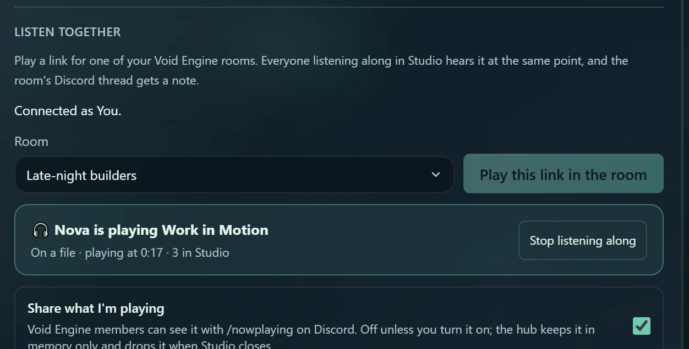
Community card
In 0.4.4A small card invites people who aren't in the Discord yet. It waits three days after first launch, shows at most weekly and never while you type, and respects Not now and Don't show again.
Settings › Community
In 0.4.4Join the Discord and your Discord link live in one card, with a plain note on what linking reads.
Nothing locked behind Discord
In 0.4.4Every theme and node style is free for everyone. Linking Discord is optional and only joins you to the community.
Friends in the main menu
Coming in 0.4.5Friends has its own Build menu section with Rooms, Your PCs and Playground, plus a stop in Vibe’s rail. Each link opens its card in the existing hub, and Search reaches them directly in both modes.
Friends bubble
Coming in 0.4.5One place in the companion menu for rooms, playdates, sharing rules and your PCs, with a badge for invites, join requests and PC work waiting on you.
Connection details
Coming in 0.4.5Paste the Mefi Studio Link app ID and the rooms hub address once per PC, and linking, Rooms, Friends and Listen together work at once. Save says whether the hub answered.
Practice with Pip
Coming in 0.4.5A practice buddy on your own PC that plays a playdate with your companion. Nothing is sent anywhere, and it works without Discord or the hub.
Playdate games
Coming in 0.4.5High five, a race, rock-paper-scissors, hide and seek and a sticker swap, plus a dance when music plays and a nap when both companions rest.
Sharing levels
Coming in 0.4.5Choose what your companion tells friends: Stay home, Play only (the default), Say hi, Status or Work titles.
Sharing rules per friend or room
Coming in 0.4.5Set a level for everyone, one room or one friend, for this session or always.
Share back?
Coming in 0.4.5When a friend's companion shares more with you, yours asks before sharing the same back. It never shares more on its own.
What was sent
Coming in 0.4.5A list of every card your companion sent this session, and a fixed list of what is never shared: keys, file paths and links, your chat, decisions and settings.
Friends setup hints
Coming in 0.4.5When something is missing, Friends says which step to take next.
Link my Discord
Rolling outOptional. Sign in with Discord in your browser so Rooms, Listen together and Friends know who you are. Studio reads only your Discord id, name and roles in the server, never messages or projects, and Unlink revokes it.
Friends › Rooms
Rolling outBrowse your rooms and listed ones, ask to join with a short note, and accept or decline invites. Each room has a plain-text chat with @names.
Make a room
Rolling outStart a Hangout room for up to 25 people or a Cowork room for up to 10, open to requests or invite-only, listed or not.
Room owner controls
Rolling outInvite people by name, lock a room, close it for everyone or leave it. Actions that can't be undone ask twice.
Room chat safety
Rolling outLinks in room chat are never clickable, you can delete your own messages and report one to the moderators. Every room says moderators can read it.
Friends › Playground
Rolling outCompanions of friends in the same open room meet and play short scripted playdates. Both screens see the same scene, each from its own side.
Listen together
Rolling outPlay a link for one of your rooms. Everyone who chooses Listen along hears it at the same point, and the room's Discord thread gets a note.
Share what I'm playing
Rolling outOff by default. Lets community members see your current link or station with /nowplaying in Discord. It never shows a file's name, and the hub forgets it when Studio closes.
Your PCs
Friends › Your PCs keeps your own computers in step through GitHub. 0.4.5 adds a setup checklist, automatic follow, a sealed vault for your setups and share files for friends.
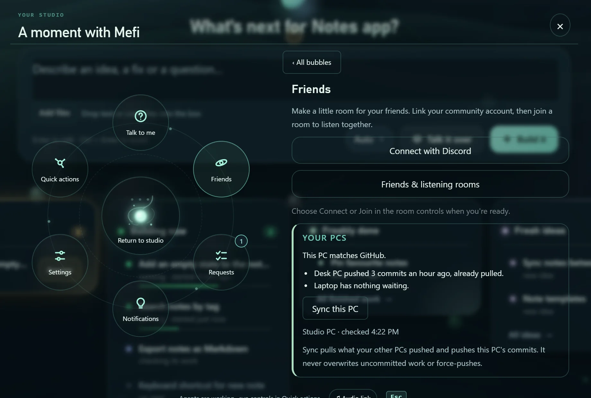
Your PCs status
In 0.4.4Shows whether this PC matches the project on GitHub and lists what hasn't reached GitHub yet: uncommitted files, unpushed commits, stashes, worktrees and branches. Opening it only looks.
Sync this PC
In 0.4.4Pulls what your other PCs pushed and pushes this PC's commits, never by force and never over uncommitted work.
Sync from a terminal
In 0.4.4npm run syncdoes the same from a terminal, and a new Claude Code session reports what isn't on GitHub yet when it starts.Put my commits on top of GitHub's
Coming in 0.4.5When this PC and GitHub both moved and nothing is uncommitted, it puts your commits on top, checks and pushes. On a conflict it changes nothing and names the files.
Sync badge and close check
Coming in 0.4.5The Friends bubble shows a badge for work only this PC holds, and closing Studio asks first: Push and close, Close anyway or Keep Studio open.
Sync catches lost work
Coming in 0.4.5Sync refuses to push a merge that silently drops 200 or more lines of another branch’s work, and names the merge and files. Your PCs reports recent suspicious merges too.
Keep this PC up to date
Coming in 0.4.5On by default. Studio checks GitHub every minute and brings in other PCs' work when nothing on this PC is in the way and no builder is running.
Set up this PC
Coming in 0.4.5A checklist of what a PC needs to share projects: Git, the GitHub CLI, Node.js, a GitHub sign-in in your browser and a suitable drive. Each gap has a button that opens a visible setup window.
Get a project from GitHub
Coming in 0.4.5Lists your own repositories, downloads the one you pick into a folder you choose, and opens it.
Share between my PCs
Coming in 0.4.5A private GitHub repository sealed with a key only your paired PCs hold, so GitHub can't read it. Tick what to send: brains, Playbook recipes, team setups, model results, memory notes, preferences, and open tasks and ideas.
Checked both ways
Coming in 0.4.5Everything is checked on the way out and on the way in: secrets stop an item, personal paths and names are removed, and received items never overwrite yours.
Keys and setup between PCs
Coming in 0.4.5Move API keys to your other PCs only after a warning, a typed confirmation and a Windows prompt. They land in protected storage and are never shown.
Your PCs list
Coming in 0.4.5Shows each paired PC, when it last synced and what waits on it per project.
Share with friends (.mefishare)
Coming in 0.4.5Save one brain, recipe, team setup, set of model results, memory note or preferences to a file you can send anyone. Studio scrubs it, shows exactly what's inside, and reviews a friend's file before it reaches your library.
Agents on several PCs
Rolling outLink a cowork room to a project and builders on each PC claim the files they will edit, so no two PCs' agents edit the same file. It needs the rooms hub and a Discord link.
Music, video and radio
A media player built into Studio. Play links, local music and ad-free radio, queue things up, browse the web, put a video behind your work, and let the node tree move to the music.

Music & video menu
In 0.4.4The audio button opens one menu for local music, radio and links. Hover it for the current source's controls, and closing the menu keeps playback running.
Links player
In 0.4.4Paste or drop a YouTube, Spotify, SoundCloud or Vimeo link to play it in its official player, or a plain audio or video file, Discord attachments included. Copy link shares what's loaded.
Spotify Jam and Twitch
In 0.4.4Links no player can embed open in their own app or in Studio's browser, and whatever was playing keeps playing.
Floating player
In 0.4.4The player floats above Studio and keeps playing as you move between pages. Drag, resize, pin or minimize it.
Up next queue
In 0.4.4A saved queue of up to 50 links with Play now, Play next and Queue next. YouTube, Vimeo and files move on by themselves.
Explore YouTube
In 0.4.4Search YouTube inside the media menu, play a result or queue it, and move through results or a playlist with Next video.
Copied link offers
In 0.4.4Copy a playable link and the open media menu offers Play, Add to queue or Queue next. It never starts playback by itself, and you can turn it off.
Show links
In 0.4.4Hide pasted, copied and queued web addresses on screen while you stream, without changing what plays.
Volume, mute and resume
In 0.4.4Volume and mute are remembered, and a player open in the last ten minutes comes back after a restart at the same place, size and position.
Background video
In 0.4.4Put a video behind your work without it catching clicks, then Return to player when you want it back. Pages keep a stronger tint so text stays readable.
Video and tree transparency
In 0.4.4Separate sliders for video brightness, video transparency and tree transparency keep the node tree readable over the video.
Keep tree in dark areas
In 0.4.4The node tree slowly moves to the darker part of the background video. Only a few brightness numbers are read, and nothing is kept or sent.
Fade on finish
In 0.4.4The media dims when a task finishes, with a notice to View result or Restore video.
Browse here
In 0.4.4Open websites inside Studio's player with an address bar, Back, Forward and reload. Sites run in their own isolated session with no access to Studio.
Player and queue together
In 0.4.4The player sits beside its queue on wide windows and above it on small ones, with a record-artwork card for local music.
Local music
In 0.4.4Play MP3, WAV, FLAC or OGG files from your computer as the soundtrack for your session.
Ad-free radio
In 0.4.4Twelve listener-funded stations from SomaFM and Radio Paradise, such as Groove Salad and Drone Zone. When a stream stalls, a backup fades in.
Music recommendations
In 0.4.4Say what you're in the mood for and the assistant suggests up to five tracks, each with a Search Spotify button.
Zen bells
In 0.4.4Soft bells keyed to how fast your agents work, in four sound profiles.
Audio link
In 0.4.4Connect local music, desktop audio (for example the Spotify app) or your microphone to the node tree, with a slider for how strongly it reacts.
Audio reactions
In 0.4.4Connection waves, separate lines for bass, mids and treble, node glow, drum accents and background glow.
Tree motion
In 0.4.4The beat quickens the spinning tree, the bass swells it and the mids sway it, always keeping every node in view.
Tree modes and live shapes
In 0.4.4Choose Steady, Music, Video or Music + video as what moves the tree, and arrange the nodes in a ring, wave or spiral.
Tree brightness and outlines
In 0.4.4Node and line brightness sliders and optional outlines make the tree easier to read.
Player controls within reach
Coming in 0.4.5The floating player gets a move handle, Settings, minimize and close buttons and a visible restore bar, and the keyboard can move and resize it.
Make it yours
Eleven colour themes, your own colours, eight animated node styles, five tree layouts, skies and motion settings, with every setting in reach. Everything is free.
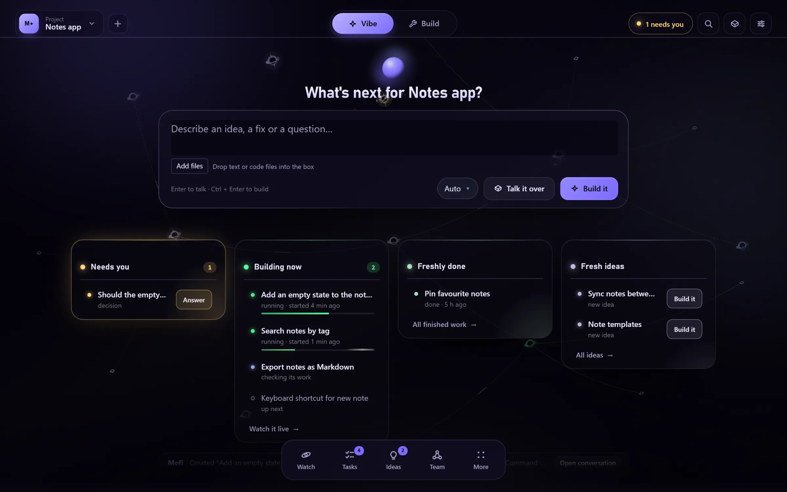
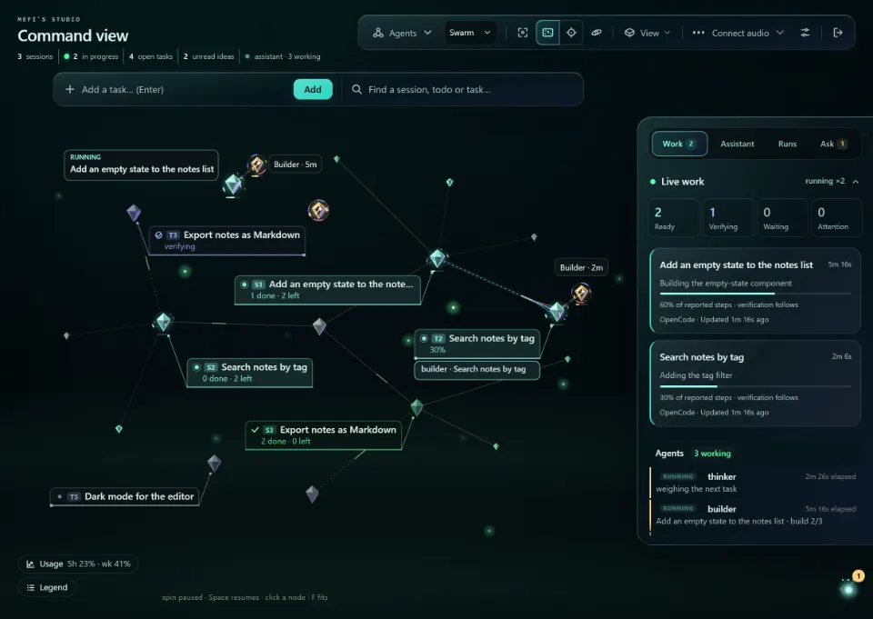
Abyss theme, Prism nodes 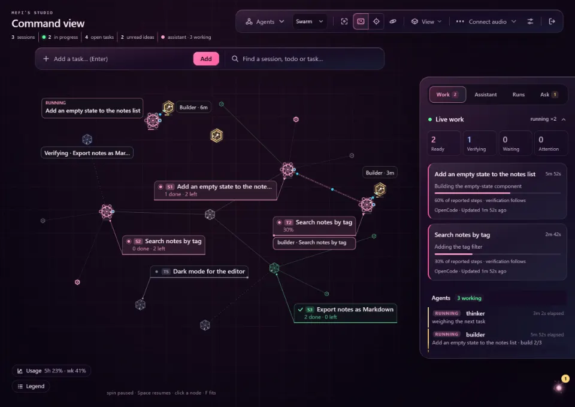
Neon Dusk theme, Sigil nodes 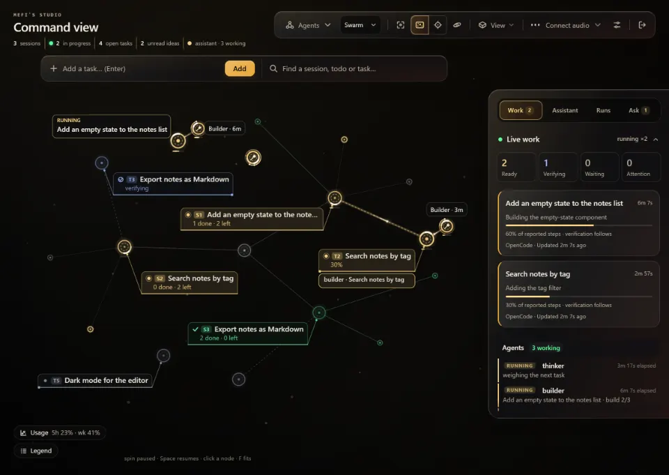
Eclipse theme, Halo nodes 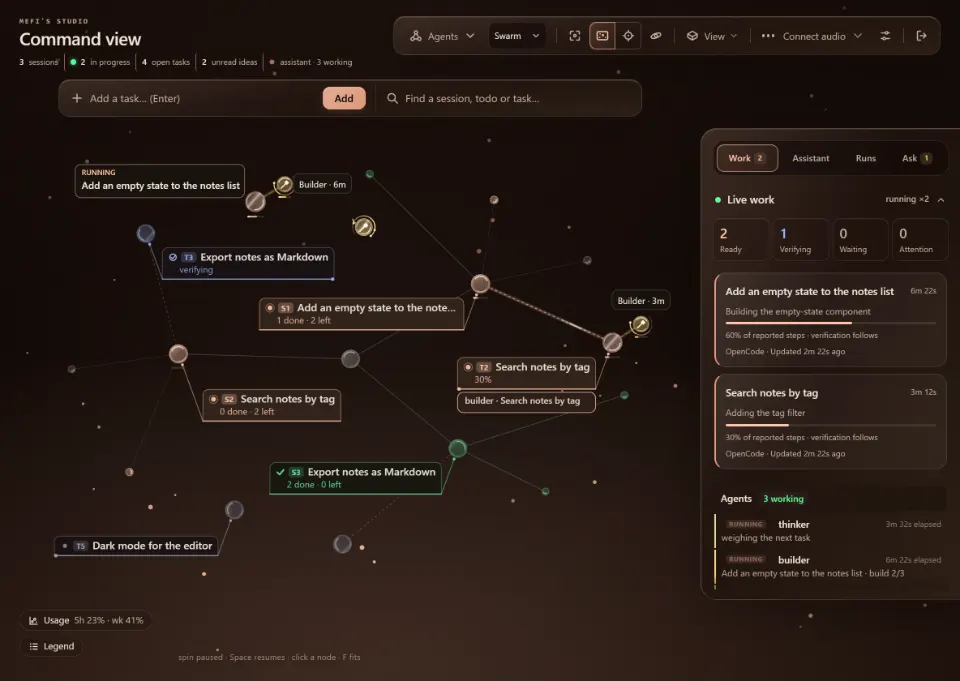
Ember theme, Soft glass nodes 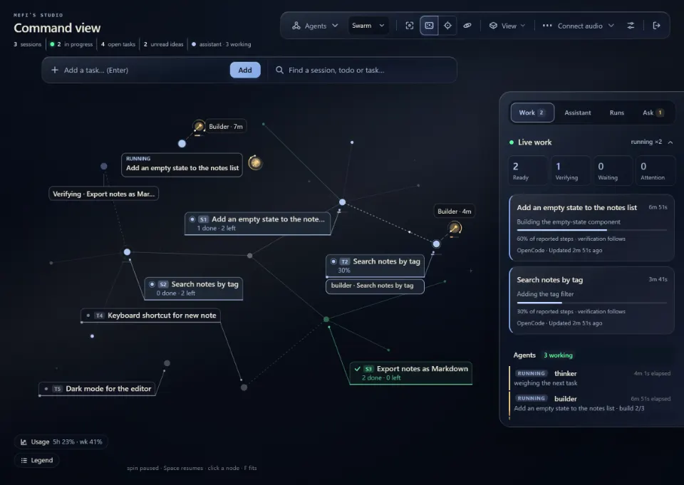
Midnight theme, Minimal nodes 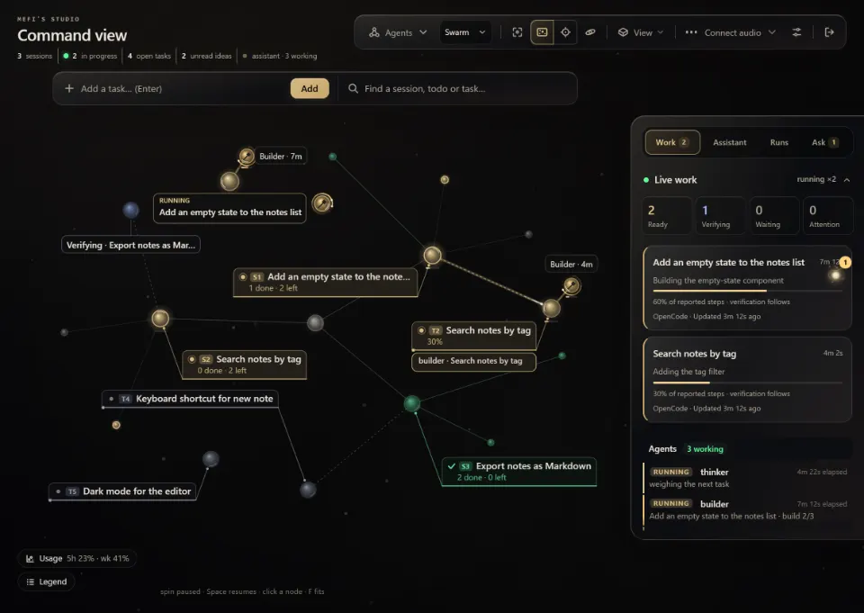
Studio gold theme, Classic orbs
Colour themes
In 0.4.4Seven themes: Aurora (the default), Studio gold, Midnight, Forest, Violet, Ember and Rose, each with its own fonts, gradients and matching sky.
Void collection
In 0.4.4Four two-tone themes (Void, Eclipse, Abyss, Neon Dusk) and three node styles (Singularity, Prism, Sigil), free for everyone.
Custom colours
In 0.4.4Pick your own accent, background, surface and text colours. Studio keeps text readable, and light palettes work too.
Node styles
In 0.4.4Eight looks for the node tree: Classic orbs, Soft glass, Minimal, Halo, Crystal, Singularity, Prism and Sigil. Every node moves, and faster while it works.
Tree layouts
In 0.4.4Constellation, Branches, Rings, Helix or Terraces, chosen per project, in flat 2D or real 3D.
Backdrops
In 0.4.4The sky follows your theme or can be Aurora ribbons, Deep space, Nebula, Rising embers, Fireflies, Soft bokeh, Warm dust, Quiet grid or Minimal.
Labels, bubbles and cards
In 0.4.4Choose node labels, turn speech bubbles on or off, and pick outlined, filled or auto cards.
Appearance with live preview
In 0.4.4Appearance (U) opens beside the live tree with Theme, Nodes, Layout and Interface sections, and a sidebar you can move to either side.
Focus, Studio and Atmosphere
In 0.4.4Three interface presets from quiet to colourful, with Density, Glass intensity and Glow intensity controls.
Home over the live tree
In 0.4.4Home's panels are frosted glass with the live tree drifting behind them. Turn off Blur behind panels to make them solid.
Motion: Full, Calm or Off
In 0.4.4Turn animation down or off everywhere. Studio also follows Windows' reduced-motion and reduced-transparency settings.
Profile & startup
In 0.4.4Set your name and your companion's, whether Studio opens on Home or Command view, and Vibe or Build as your Studio mode.
Settings and Agents › Setup
In 0.4.4Settings holds General, Appearance, Audio and System, and everything about agents lives in Agents › Setup. Ctrl , opens Settings from anywhere.
Find a setting
In 0.4.4Type a setting's name in Find a setting or Search Studio, and the result opens its section and focuses the control.
Configuration (Ctrl Shift ,)
Coming in 0.4.5Every setting Studio has in one searchable tree, including the setup helper’s sections and a pinned Walk me through setup. Picking one opens its real control.
Interface scale
Coming in 0.4.5Make the whole interface 70% to 150% size. It stays that way on every launch.
Calm menu motion
Coming in 0.4.5Rows that stay keep still or glide to their new place, new rows rise in and panels slide in from the side you came from. Reduced motion turns it off.
Get started and connect an AI
Download the portable Windows build, open a folder and use an AI you already have: a subscription login, an API key or a model on your own PC. Nothing runs until you choose.
Studio runs on Windows 10 and 11. It doesn't sell AI access, so your provider's limits and terms apply. Download 0.4.4 · Your first project
Portable Windows download
In 0.4.4Download the zip from GitHub Releases, extract the whole folder and open Mefi Studio AI+.exe. You don't need Node or Git to run it, and its data stays in its own folder.
What you need
In 0.4.4Windows 10 or 11. Git is recommended so Studio can check commits and sync PCs. Without a coding tool you can still plan and chat, but nothing can be built.
Launch screen
In 0.4.4Every launch opens on a project picker with your last project selected. Choose Open studio (agents stay off) or Open and start agents.
Picking up where you left off
In 0.4.4If a crash, reboot or update restart cut work off in the last ten minutes, Studio reopens that folder and restarts the agents that were running.
Start here walkthrough
In 0.4.4Seven stops: Scan, Your workspace, First map, Connections, Create, Monitor and Review. Walk with me highlights the real control, and the guide never starts a build by itself.
Scan what this PC has
In 0.4.4The first stop looks for OpenCode, its providers and free models, and keys saved in Studio. It sends no prompt and saves nothing until you choose Use this setup.
First map
In 0.4.4A read-only explorer reads your folder and saves suggested first tasks as ideas, never as tasks. It can run through a subscription login.
Use a subscription you already have
In 0.4.4Pick Codex, Claude Code, Grok, Antigravity or OpenCode, and Check connection sends one small test prompt on your account. Passwords and tokens stay with the tool.
Use for the whole studio
In 0.4.4One click runs chat, planning, every agent seat and the coding workers on that one signed-in account.
Tools installed while Studio is open
In 0.4.4Studio re-reads PATH before it looks for coding tools, so one you install while it's open shows up without a restart. Refresh installed tools does the same.
API keys
In 0.4.4Paste a z.ai, OpenCode Go, OpenCode Zen or OpenRouter key once and it is encrypted on this PC. Saving a key never switches an agent to it by itself.
Local models
In 0.4.4Point Studio at LM Studio on your PC, or at any OpenAI-compatible server such as Ollama.
Auto setup
In 0.4.4Looks at saved keys, installed coding tools and local servers and picks a working setup, without any paid request. A fresh install runs it once by itself.
Chat and coding checked separately
In 0.4.4Studio shows whether you can talk to an AI and whether a coding worker can build. A saved key alone never claims a build can start.
Update check and badge
In 0.4.4The portable app checks GitHub every 20 minutes, or press Check GitHub in Settings › System › Updates. A menu badge and a toast say when an update is ready.
Checked downloads
In 0.4.4Every update is checked against its published SHA-256, and a mismatch stops it and removes the download.
Restart now saves your agents first
In 0.4.4Restart now stops the coding agents, saves their latest work and relaunches Studio paused. Resume carries on.
Fresh model catalog with each update
In 0.4.4Installed apps receive the updated public model catalog with each new version.
Run from source
In 0.4.4Clone the repository and run
npm ci,npm run build-bookletandnpm startwith Node 24. A source install picks up changes as you edit.One-click launcher
In 0.4.4Double-click Run Mefi's Studio AI+.cmd to start the portable build if one exists, or the source install.
One Studio at a time
In 0.4.4Opening Studio again brings the open window to the front.
Browser-only preview
In 0.4.4npm run start:webopens a look-around preview on this PC. It can't launch workers.Headless key setup
In 0.4.4On a machine with no screen, set
MEFI_STUDIO_KEYand runnpx electron . --set-keyonce.Optional integrations
In 0.4.4If the separate Discord Server Styler or the author's Ruins Runner game is on your PC, Settings can start, check and stop them. A fresh install works without either.
Setup helper
Coming in 0.4.5One sheet for every setting that decides what agents do. Quick setup takes three steps, and it opens first on a new install.
Start free with OpenCode
Coming in 0.4.5No subscription and no key? Start free with OpenCode picks OpenCode's free models for you. Free models may use your prompts for training.
More than one login
Coming in 0.4.5Add up to six Claude Code or Codex subscription logins. When one hits its usage limit, work moves to the next without costing the task an attempt.
I have an API key or a local model server
Coming in 0.4.5At Scan and First map, this button takes you to Connections instead of installing a tool, then scans again when you're back.
Clear help when no AI is connected
Coming in 0.4.5Home, Vibe and agent status say 'No AI connected' with a Connect an AI button, and with no coding tool installed Studio says which one to install.
When Studio opens
Coming in 0.4.5Choose Resume what I had (the default), Start agents or Keep agents off. Studio also stops jumping to Command view after five quiet minutes unless you turn that on.
Install and sign in
Coming in 0.4.5Opens a visible setup window that installs the tool and runs its sign-in. 0.4.5 fixes a bug that could close that window at once; on 0.4.4, sign in to the tool from a terminal if that happens.
Updates that install themselves
Coming in 0.4.5Update downloads and checks the new build, then replaces the app files after Studio exits. A bug stopped that last step up to 0.4.4, so get 0.4.5 from the Download page and keep your
resources\app\datafolder.Runs on Linux from source
ExperimentalStudio ships for Windows only. Every push also checks that the source opens a window on Linux, but Linux and macOS aren't supported desktop platforms.
Private, safe and light on your PC
Studio is local-first and open source, with no account, no telemetry and encrypted keys. It keeps working in the tray, guards your PC against runaway runs and rests when nothing changes.
Free and open source (MIT)
In 0.4.4All of Studio's code is public on GitHub under the MIT license. Use it, fork it or change it for free.
No account, no telemetry
In 0.4.4There's no sign-up and no usage tracking. Studio only contacts the AI services and tools you connect, GitHub for releases, media you play, and Discord or the rooms hub if you link them.
Local-first projects
In 0.4.4Tasks, conversations, plans and settings stay on your PC. They are never committed to Git or packed into a release.
Encrypted keys, never shown back
In 0.4.4Keys are encrypted with the Windows keystore (DPAPI), kept apart from your preferences, and only ever shown as 'saved' or 'not saved'.
Keys stay out of agents' reach
In 0.4.4Coding workers, git, npm, checks and other child processes don't get Studio's saved keys in their environment.
Secrets masked in logs
In 0.4.4Tool transcripts and scout payloads are cleaned of secrets, and bearer tokens are masked before they are saved.
Chat through a CLI runs with its tools off
In 0.4.4When a subscription tool answers chat, planning or mapping, it runs in a throwaway folder with its file, shell and MCP tools off. Only coding workers edit your project.
The window stays on its own page
In 0.4.4Links open in your normal browser, only http and https, and nothing can navigate the Studio window away from the app.
Settings that don't get lost
In 0.4.4Saves wait their turn so two changes never undo each other. A damaged settings file is copied aside instead of wiped, and damaged task stores are recovered.
Private security reports
In 0.4.4Report anything that could expose keys or files privately through GitHub's vulnerability reporting, not a public issue. You'll hear back within a week.
Keeps working in the tray
In 0.4.4Closing the window parks Studio in the tray while agents keep working. The tray menu has Open Studio, Start agents, Pause/Resume and Quit.
Keep this computer awake
In 0.4.4While agents are working, Studio stops Windows from sleeping.
Machine guard
In 0.4.4Studio sizes how many workers run to your memory and CPU. New starts wait while the PC is laggy or low on memory, and the hold says how long is left.
Resource manager
In 0.4.4Stops test runs that go idle, run too long or use too much memory, and logs every stop.
Light when idle
In 0.4.4Command view drops to about ten frames a second when nothing moves, and panels skip work nobody can see.
Work survives a quit
In 0.4.4Builders save their progress before Studio quits, and interrupted work picks up on the next start instead of starting over.
Diagnostics
In 0.4.4Settings › System › Diagnostics gathers a speed probe, the Performance profiler (exportable as JSON), the auditor, machine tools and the connection log.
Tray and keep-awake switches
Coming in 0.4.5The setup helper gets switches to turn off hiding in the tray and keeping the PC awake.
Nothing matches that yet. Try fewer words or another status, , or ask for it below.
Missing something?
Ask for it. Open a feature request on GitHub, or tell us in the Discord, whichever is easier. If someone already asked, add a thumbs-up on GitHub so it rises.